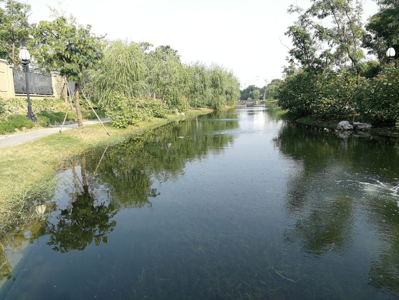
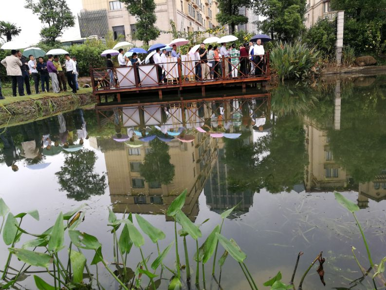
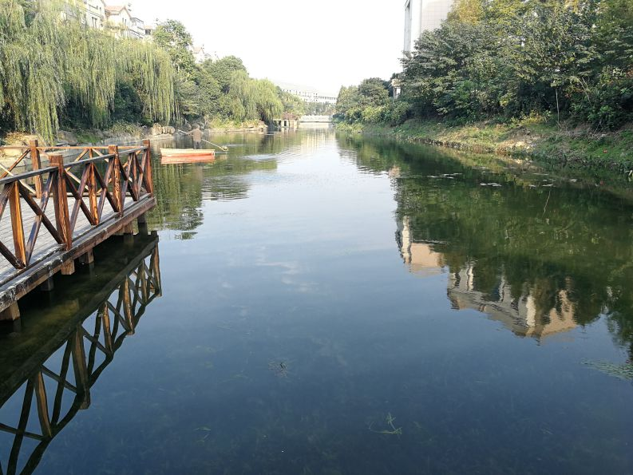

2017年11月28日上午，秀洲区委书记吴炳芳带队来到由浙江嘉科新能源科技有限公司承建的范家浜和吴家木桥港等河道治理项目的现场，深入考察我司的“水生态综合修复技术”的治理效果，实地了解秀洲高新区在“五水共治”工作中的落实推进情况。
吴书记一行听取了我司河道项目的治理情况汇报并实地参观考察了范家浜和吴家木桥港等河道的治理效果。在参观考察现场，吴书记对我司开发的“水生态综合修复技术”及该技术在河道等水体的治理效果方面给予了充分肯定，并表示“如果其他河道都能做成这样，可作为旅游观光的一道风景了”!吴书记此次专程来范家浜和吴家木桥港进行参观考察，充分体现了区领导对我司工作的关心和肯定，对秀洲区“五水共治”工作的重视！
“水生态综合修复技术”是我司新开发的用于河道、湖泊等水体生态修复的技术，该技术集污染源预处理、微生物、增氧曝气、水生植物、水生动物等修复技术于一体，其核心是通过沉水植物构建“水下森林”、建立水体生态系统、恢复水体自净能力，该技术能从根本上改善水体水质，恢复水体“免疫力”，且治理效果好；经该技术治理后的劣5类水体，可恢复到2～4类水，水体清澈度可达到1.8米及以上；我司的“水生态综合修复技术”不仅可提升河道、湖泊等水体水质，更能把河道、湖泊等水体打造成城镇的一道美丽风景线！
目前，我国水体普遍受污染严重，我司开发的“水生态综合修复技术”竞争力强，市场应用前景广阔，我们希望通过我们的努力将更多的河道治理成跟范家浜和吴家木桥港一样的清澈透明，为嘉兴的“五水共治”工作添上浓墨重彩的一笔，为建设美丽中国奉献我们的智慧和力量！


